Marina Moreira Nutritionist
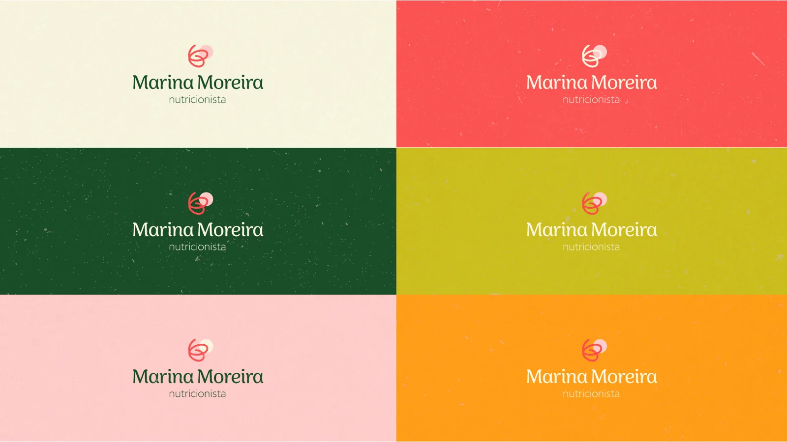
- Client
- Marina Moreira
- Year
- 2023
- Project
- Brand Strategy & Design
- What’s included
- Brand strategy, Logo, Color palette, Typography, Graphic elements, Business cards, Stationery, Social media
Marina Moreira Nutritionist
Marina Moreira is a nutritionist who helps women build food autonomy without restrictive diets. Her care is based on active listening and free of judgment, so women can live at peace with food, enjoy eating again and let go of the fear.
Marina had already had two logos and never felt they represented her. She felt disconnected. So the challenge was to uncover the essence of the brand and show it visually, in a strategic way. We built the brand strategy and the visual universe around a happy, empathetic, welcoming and cozy essence, and showed the transformation she brings in a way that is minimal, delicate and light.
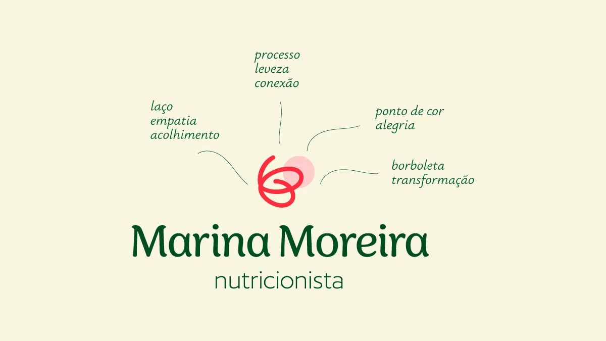
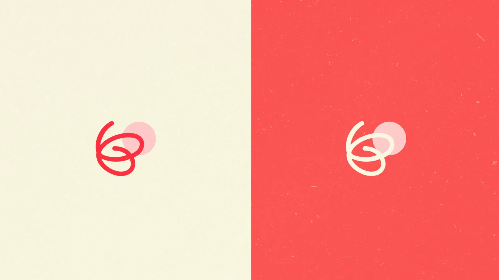
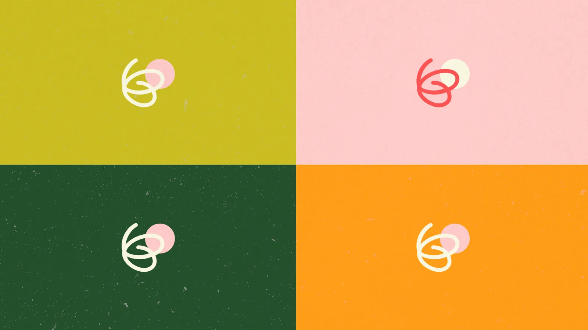
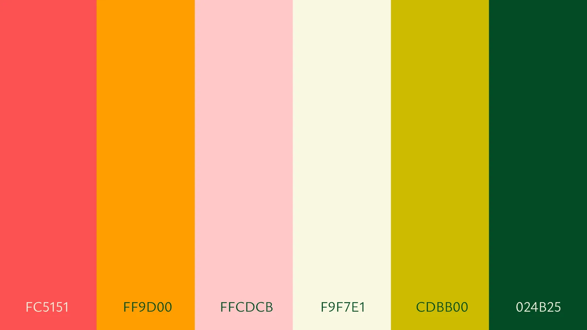
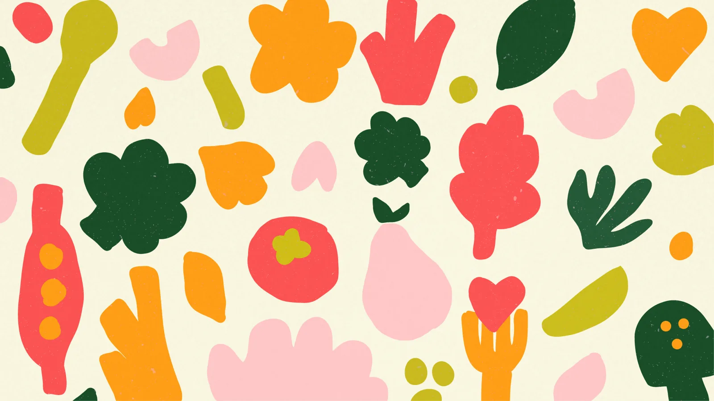
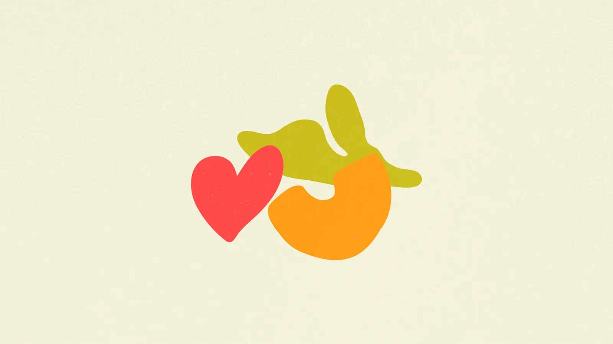
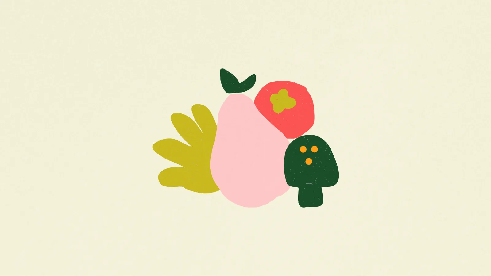
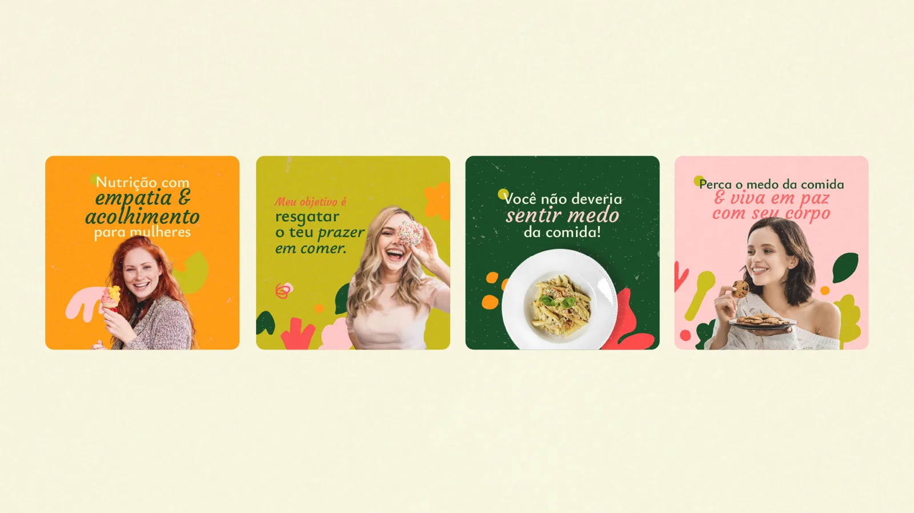
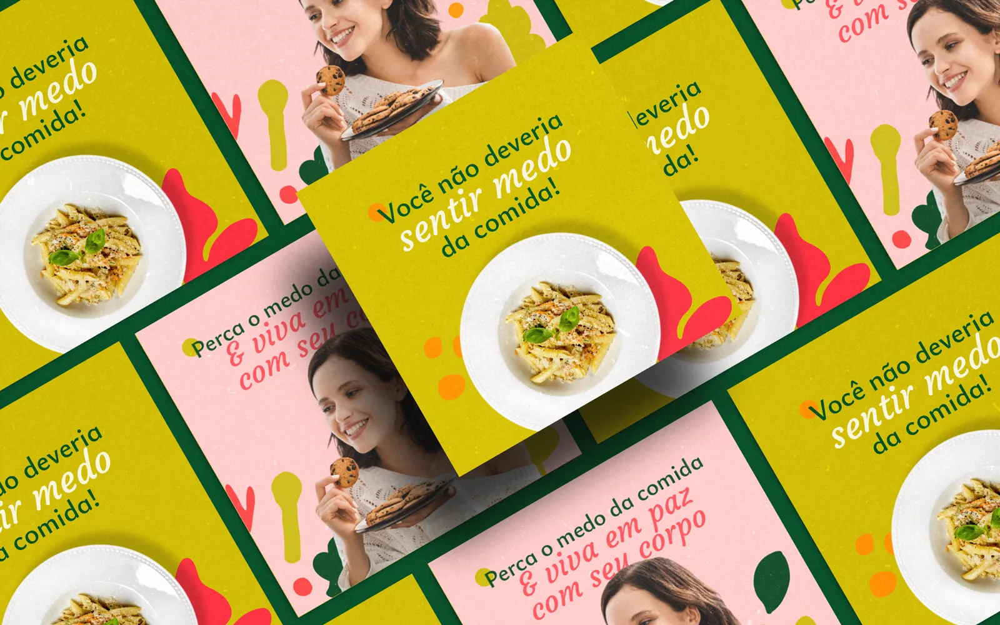
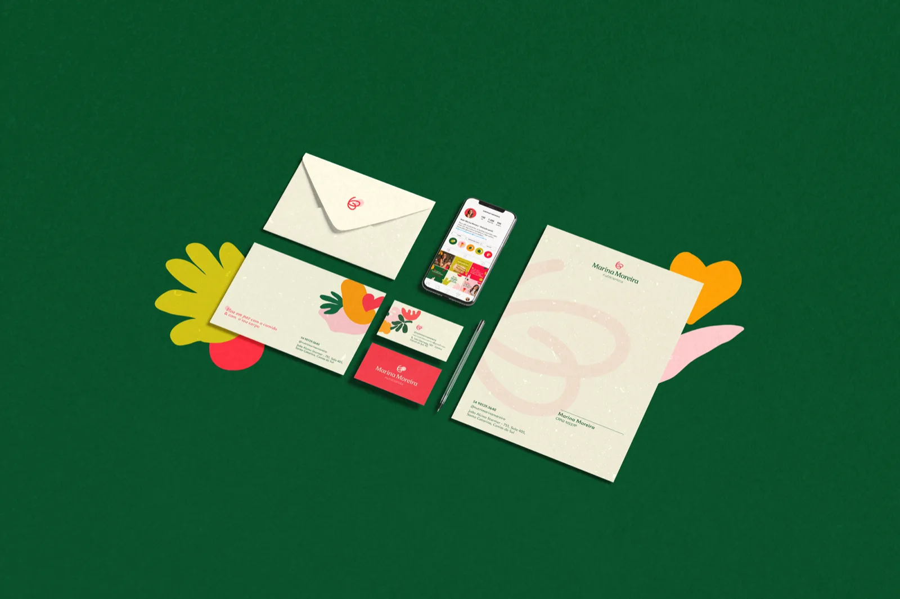
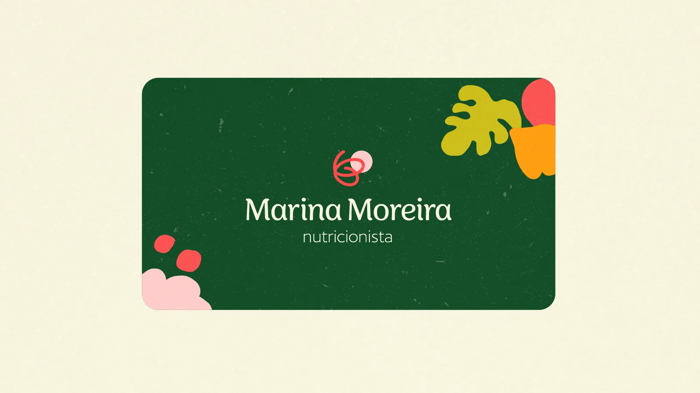
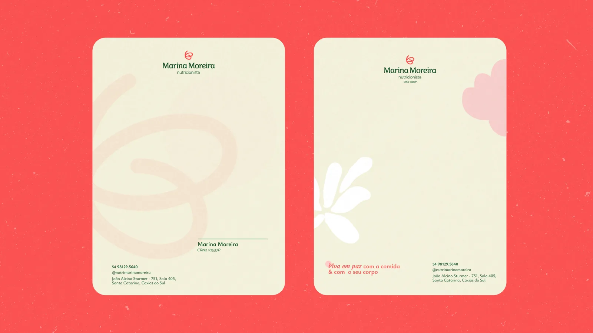
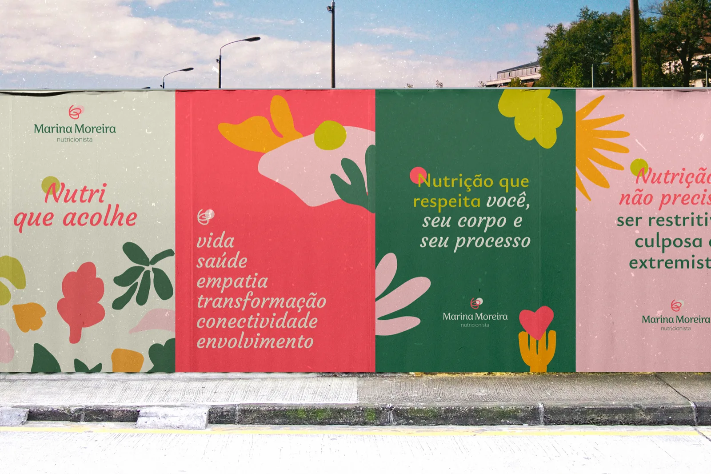